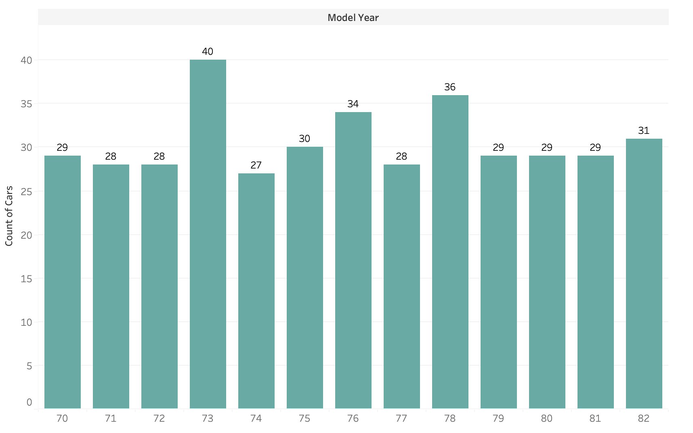
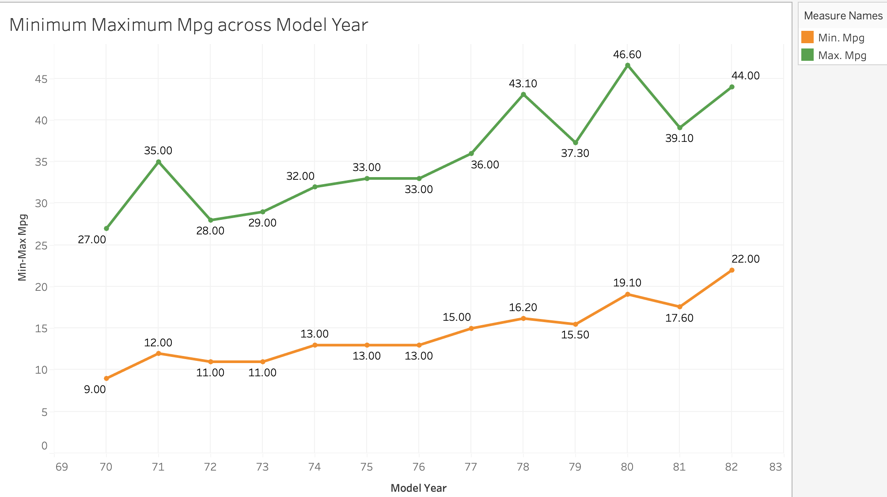

Initial analysis and visualizations using Tableau
Objective
In this project, we will investigate the impact of several automobile engine factors on the vehicle’s mpg. The dataset contains information for 398 different automobile models. Information regarding the number of cylinders, displacement, horsepower, weight, acceleration, model year, origin, and car name as well as mpg is contained.
Report
For this dataset, mpg is our dependent variable. So first using Tableau, I built scatterplots with other independent variables to see the trend between the two variables. Following we have :
- Acceleration vs Mpg
- Cylinder vs Mpg
- Displacement vs Mpg
- Horsepower vs Mpg
- Origin vs Mpg
- Weight vs Mpg
Displacement, Weight and Horsepower show a good negative relation with the mpg. Next let’s see the distribution of our data about cars. First, let’s see how many cars belong to each year of make, below we plotted a bar graph using Tableau.

Analysis:
Maximum cars in the data belong to the year 73, the count is 40, followed by 36 cars in the year 78. Minimum cars belong to the year 74.Below we can see, that as we moved in years, the MPG for cars being made overall started improving.

Analysis:
The minimum MPG from 70 to 82 changed from 9 mpg to 22 mpg. Similarly, the maximum MPG changed from 27 mpg to 44 mpg. That is great jump. So as the years passed, the mpg kept improving.
Next, let’s visualize the spread of cars based on the origin of manufacture. For this we will utilize a pie chart that will show us how they are distributed across Origin. Analysis: This shows the maximum cars come from Origin 1, followed by Origin 3 and least from Origin 2.